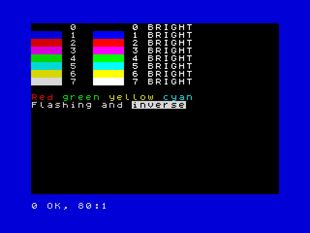

8. Colours and the screen
In this chapter you will learn to use the machine's colours with INK,
PAPER, BORDER and BRIGHT, to make text flash, to write anywhere on the
screen with PRINT AT and TAB, and to switch to the high-resolution mode
with MODE.
The colours
ZX-V has the colours of the ZX Spectrum. There are eight, numbered 0 to 7, and each one has a brighter version:
| Number | Colour | Number | Colour |
|---|---|---|---|
| 0 | black | 4 | green |
| 1 | blue | 5 | cyan |
| 2 | red | 6 | yellow |
| 3 | magenta | 7 | white |
These are the standard colours. With PALETTE,
each number can be any colour you like; the reference shows how.
Every character on the screen has two colours: the ink (the colour of the letter) and the paper (the background behind it). Around the screen there is a frame, the border.
INK nchooses the colour of what you write and draw.PAPER nchooses the background colour.BORDER npaints the frame at once.CLSclears the screen and fills it with the paper colour.BRIGHT 1makes the colours brighter (BRIGHT 0goes back to normal).
10 BORDER 1: PAPER 0: INK 7: CLS
20 FOR c=0 TO 7
30 PRINT PAPER c;" ";PAPER 0;" ";c;" ";
40 PRINT BRIGHT 1;PAPER c;" ";PAPER 0;" ";c;" BRIGHT"
50 NEXT c
60 PRINT
70 PRINT INK 2;"Red ";INK 4;"green ";INK 6;"yellow ";INK 5;"cyan"
80 PRINT FLASH 1;"Flashing";FLASH 0;" and ";INVERSE 1;"inverse"

On its own line, INK 2 changes the colour for everything that comes after.
Inside a PRINT, like in lines 30 to 80, it only changes the colour of that
PRINT: the next one goes back to the colours you had.
Two more effects:
FLASH 1makes the text swap its ink and paper about three times a second.INVERSE 1swaps ink and paper: the text appears as a hole in a block of colour.
A useful trick for messages that stand out:
10 PAPER 7: INK 0: CLS
20 PRINT AT 10,8; PAPER 2; INK 7;" GAME OVER "
30 PRINT AT 12,8; INK 1;"Score: "; INK 2;1250
If you know the Spectrum: on ZX-V every pixel has its own colour, so there is no colour clash: drawing in one colour never changes the colour of the pixels next to it.
Writing anywhere: PRINT AT
The screen is a grid of 32 columns and 24 rows of characters. The program
can write on the top 22 rows, numbered 0 to 21; the bottom two belong to
INPUT and to the messages. PRINT AT row,column; moves to that place
before writing:
10 PAPER 1: INK 6: CLS
20 PRINT AT 0,0;"Top left"
30 PRINT AT 10,12;"Middle"
40 PRINT AT 21,20;"Bottom right"
50 PRINT AT 5,0;"Name";TAB 16;"Score"
60 PRINT AT 6,0;"Ada";TAB 16;"120"
Rows go down from 0 at the top; columns go right from 0 at the left. A row
or column outside the screen gives 5 Out of screen.
TAB n jumps to column n of the current line: it is handy for tables.
With PRINT AT and random numbers you can fill the night sky with stars:
10 BORDER 0: PAPER 0: CLS
20 FOR i=1 TO 300
30 PRINT AT INT (RND*22),INT (RND*32); INK INT (RND*7)+1;"*";
40 NEXT i
High resolution: MODE 1
So far you have used mode 0: 256 × 192 pixels, like the Spectrum. ZX-V has a second mode with twice as many pixels across and down: mode 1, 512 × 384 pixels, with 64 columns and 48 rows of smaller characters.
10 MODE 1
20 PRINT "Mode 1 has 64 columns and 48 rows of text."
30 PRINT AT 45,50;"Bottom corner"
40 PLOT 0,0: DRAW 511,367
MODE clears the screen. In mode 1 the program can use rows 0 to 45. Line
40 draws a line across the whole screen (you will learn PLOT and DRAW in
the next chapter). To go back to the normal mode, type MODE 0.
Try it
- Write your name in the middle of the screen in yellow on blue, with a red border.
- Draw a chessboard of 8 × 8 squares, each square two characters wide and one row high, alternating black and white paper.
Hint
For the chessboard, use two FOR loops, one for rows and one for columns.
The square in row r and column c is white when r+c is even:
INT ((r+c)/2)=(r+c)/2. Print two spaces with PAPER 7 or PAPER 0 at
AT r,c*2.
A solution for the second one
10 BORDER 1: PAPER 1: CLS
20 FOR r=0 TO 7
30 FOR c=0 TO 7
40 LET p=7*(INT ((r+c)/2)=(r+c)/2)
50 PRINT AT r+7,c*2+8; PAPER p;" "
60 NEXT c
70 NEXT r
Line 40 uses the fact that a true condition is 1 and a false one is 0, so p
is 7 (white) or 0 (black).
Reference: Colours,
INK, PAPER, BORDER,
BRIGHT, FLASH,
INVERSE, OVER,
PRINT, CLS,
MODE.
Next: 9. Drawing · Previous: 7. Procedures